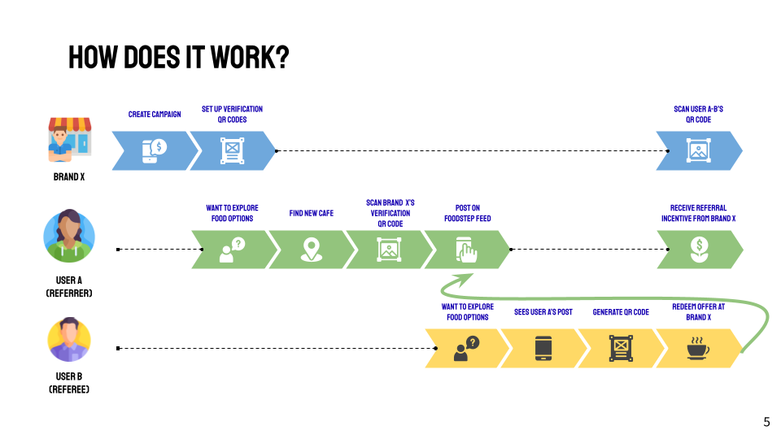

SMU CS206 2022 Project
Jio Leh! is a social food discovery platform created for SMU's CS206 Software Product Management course. The project's requirement was to come up with a viable software product with business potential, addressing a gap in the current market, and create the prototype of the software. Our team came up with the idea of Jio Leh! to help to increase eateries' discoverability, grow customer loyalty and guarantee conversions by leveraging user-generated content marketing via customer referrals and authentic social media posts. It was shortlisted for SMU Eagles Inc.'s HATCH competition, a startup pitching competition hosted annually by the club.
During the Covid-19 pandemic, many F&B businesses took a hit because
of the restrictions imposed on dining. They experienced low footfall
as a result. However, even before the pandemic, traditional digital
marketing strategies have not been very effective in directing
traffic to their establishments, and is often a hassle for the
vendors to maintain.
On the other hand, the question of "what to eat?" is in everybody's
minds every day. According to a preliminary survey conducted by the
team, over 90% of respondents discover new places to eat
through word of mouth from friends or family, and over
40% through social media influencers. But currently, there is
a lack of incentive to actually spread the word about
establishments through social media, despite people's reliance on
social discovery to find new places to eat.
Enter Jio Leh!, a social discovery platform for food!
Jio Leh! is a social discovery platform for organic food
posts, along with a referral system that serves to encourage
users to try out new places. Unlike traditional digital marketing,
our product encourages organic content creation by users, which
would increase brand presence without the vendors having to actively
manage their own social media page.
Jio Leh! is distinct from other F&B referral and discovery apps, as
it is an interactive app that not only acts as a means to spread the
word about eateries, but also actively encourages conversions
through our unique referral system. Our main target audience are F&B
businesses looking to drive exposure and grow their loyal customer
base.
And from this process, User B gets a freebie, User A gets monetary reward from her referral, and Eatery X gets a new customer! Furthermore, User B can create his own post about Eatery X and become a referrer himself, drawing in more customers to the eatery.
Jio Leh!'s three key features aims to provide value for both eateries and users!
Foodstep Feed: Eateries gain the benefit of crowdsourced marketing, removing the hassle of having to actively curate their own content. Meanwhile, users gain social engagement through authentic user-generated content.
Campaign Creation: Eateries have the flexibility of setting their own rewards and redemption limits. Meanwhile, users will gain benefits (such as a discount or freebies) when visiting an establishment referred by someone else.
QR Referrals: The referral system guarantees conversions per marketing dollar spent, whereby eateries will only need to pay for successful referrals instead of spending on traditional digital marketing methods (e.g. influencers) in advance. Users gain monetary incentive to spread the word about an establishment.
Jio Leh! is competing in 5 sectors.
Try out Jio Leh!'s live prototype here!
The prototype is created using the React framework with Sanity (headless CMS with NoSQL database) as its backend. To simulate payments, we integrated Ethereum payment using Metamask into the prototype. However, Jio Leh! aims to support traditional forms of payment, such as credit/debit card, as well!
From this project, I learned a lot more about the holistic overview
of creating and managing a software product, not just in terms of
its development, but also its impact and commercial viability.
Firstly, careful feature selection is important to fit target
customers' requirements as well as be feasible to develop. Second, I
learned that a clearly defined product positioning is crucial
to gain a competitive advantage in the market. Thirdly, a team
should have effective communication to align our vision and
ensure a favourable working environment. Lastly, a
strategic roadmap ensures that our product is competent to
deal with changes in the market and the evolving nature of software
products.
While I think that Jio Leh! has some merit and may have some
potential to be implemented as an actual product, I believe that it
is still a far way from that goal. If we were to develop Jio Leh! as
an actual product, we would have needed to conduct
requirements gathering at a larger scale and a more
thorough market analysis. A major drawback of the idea is
also that it has not been tried and tested in an actual F&B setting.
Thus, while the user journey sounds good on paper, it may prove to
be much too complicated to implement in real life, where service has
to be delivered at a rapid pace.
Despite this, I am thankful to both the faculty and my teammates for
bringing me such an enjoyable and rewarding experience through this
project, and I hope to be able to bring what I've learned a step
further!